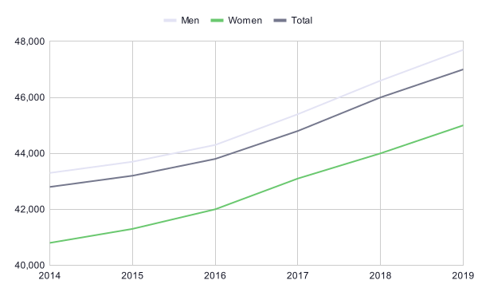

Data Visualization - Women in the labor force
There are a lot of areas of the labor force where it’s interesting to study women compared to men. In this part we will specifically look at areas like wages, unemployment, shortage of skilled people, age distribution etc. Only by looking at the current labor market we can start to understand what is needed in the future and what has to be done to develop the market in a desired direction.
Gender
The total number of both women and men working within Professions related to a Master of Science in Engineering (Civilingenjörsyrken) has increased from 2014 to 2019. The ratio men and women was 2014 78/22 and was 2019 75/25. We can see a slow increase of women in these professions.
Source: Statistics Sweden
Gender and Age
We have already concluded that the number of people working within professions related to a Master of Science in Engineering have increased from 2014 to 2019. And that the ratio of women to men also has increased. In this section you will be able to see the increase per gender and age groups. Worth to notice is that men in their 40s do not seem to have increased that much during the last years. It is also promising to see that the age group of women in their 30s is the biggest, signaling that more women have entered the labor force in this area. This is hopefully an ongoing trend that will continue for many years to come.
Source: Statistics Sweden
Comment
If we look at the ratio of women to men per age group we can see that the ratio of women has increased in mosted age groups over the years. However in the age group 30-39 years we see the least change. The ratio of men and women was in 2014 72/28 and it’s in 2019 71/29. There can be many reasons why we see this very slow development for this age group. It might have to do with that women are trying other professions after their first job and that they later might come back into this field of the labor force. It might also be that fewer women want to be in this field when they decide to start a family.
Wages
The wages and data collected to wages are usually not set to specific degrees or certain education, it’s connected to what tasks you are performing at work. Many engineers work in engineering-related professions. But also people with other backgrounds, that gained their skills in other ways, are working in those professions. That’s why we for example are not going to talk about the salary for people with a Master of Science in Engineering, but rather professions related to a Master of Science in Engineering.
Average monthly salery for professions related to a Master of Science in Engineering (Civilingenjörsyrken), per gender (2014-2019)
Comment
We can clearly see that both mens and womens salaries have increased between 2014 and 2019. But what is also clear is that women's salaries are lower than men’s and that it does not seem to have changed over the last years. If we look at women's salary as a percentage of men's salary for professions related to a Master of Science in Engineering (Civilingenjörsyrken) we can unfortunately see that between 2014 and 2019 the percentage has been between 94-95 percent.
To learn more about the labor market have a look at the data visualization for the Work force/Labor market to learn more.
Women in listed companies
Every year the Swedish non-profit foundation Allbright publishes a report regarding gender equality and diversification in leading positions in the private sector. Below are some highlights from the 2020 years report. You can find the full report here.
Listed tech companies in Sweden had 34 women in a leading position in 2019, and for 2020 that number has increased to 67 women.
It is also interesting to see what part of the company the woman is a manager within. Only 15 percent of the managers in the core business functions are women, while 39 percent of the managers in the supporting business functions are women.
Comment
It seems that private listed companies are better at having women on the Board then in their Executive management team. It might have to do with the fact that the Board usually consists of external members and the Executive management team of internal members. Furthermore only 19 percent of the listed companies in Sweden have a gender equal Executive management team.
Comment
Let us remember that this gender ratio is lower than the ratio of women in the Master of Science in Engineering programs and the ratio of women with Master of Science in Engineering degrees. Somewhere along the way women with engineering backgrounds choose to work in other professions.